Began something
Starting is often the hardest part. You did it.
Moody is a personal journal that notices the small wins you walk past every day, and awards you for them. Track your mood, write freely, and discover who you're becoming.
Most of us underestimate ourselves. We journal about our days without ever noticing the quiet moments of courage, kindness, and growth we've tucked into them. Moody changes that.
Moody is a mood-aware journal designed to help you slow down, check in with how you're feeling, and capture what's on your mind without pressure or prompts.
After you save, Moody's on-device AI reads your entry and surfaces the achievements hiding in plain sight: the time you reached out to a friend, repaid a favour, or simply got yourself outside. Small things. Real things.
Moody doesn't hand out badges for streaks or step counts. Every award you earn is grounded in your own writing. One entry can earn several medals when it contains distinct achievements.
Whether you prioritised sleep, moved your body, connected with someone new, or simply stopped to notice something good, Moody sees it, names it, and reminds you it counts.
A dark, calm interface designed to fade into the background so your thoughts can come forward.
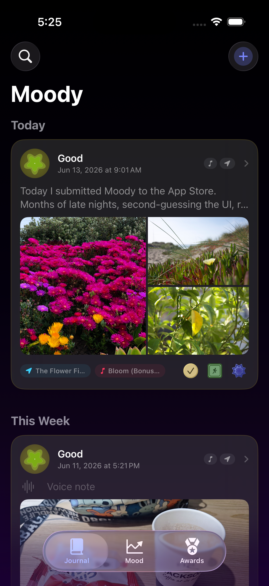
Every entry lives in a calm, beautiful chronological feed. Entries can contain text, audio recordings, images, a set location, and a song that captures the mood.
An entry can hold more than one win. Moody looks for distinct achievements in your writing and reveals each medal in turn, using on-device Apple Intelligence.
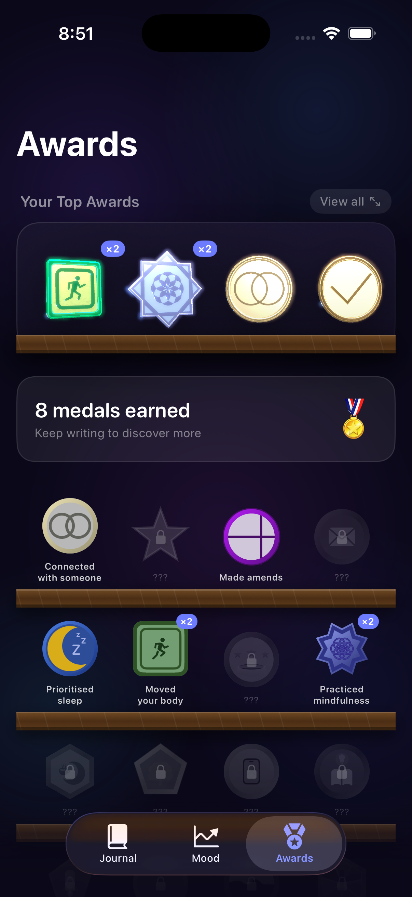
Before you write, Moody asks one simple question. The Mood Meter morphs and breathes in real time, reflecting your state of mind.
A slow, animated circle guides you through a breathing cycle before your journal opens. Take a quiet moment with a guided box-breathing cycle. The circle expands on the inhale, pauses, contracts on the exhale, and rests.
Finishing something and making time for a friend can both count. Each distinct achievement gets its own medal, with a moment to enjoy it.
Colorful metallic medals, clear details, and a softer celebratory chime. The same designs follow you from your journal to your collection.
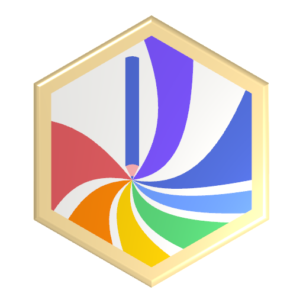
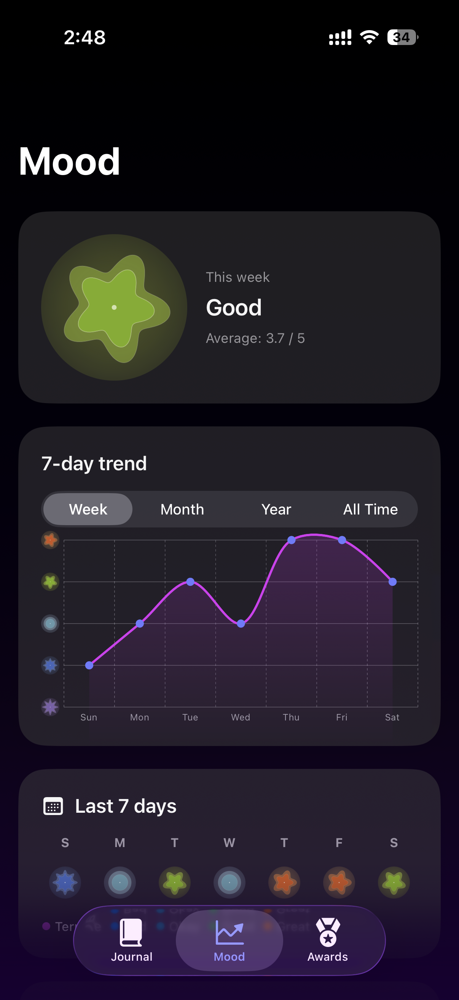
Your mood check-ins build a picture over time. Understand your triggers, appreciate the quiet days that went well, and notice how far you've come.
Every award in Moody comes from your own words. Write honestly, and Moody will find the moments worth celebrating, even if you wouldn't have noticed them yourself.
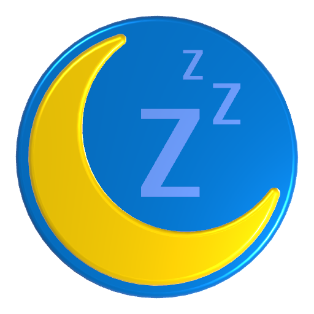
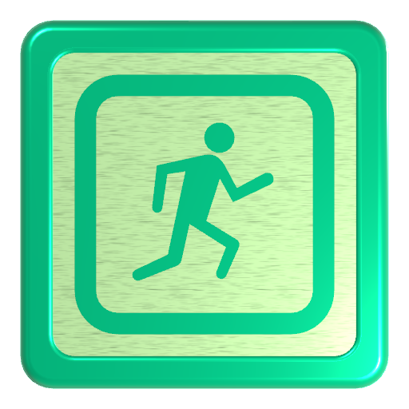
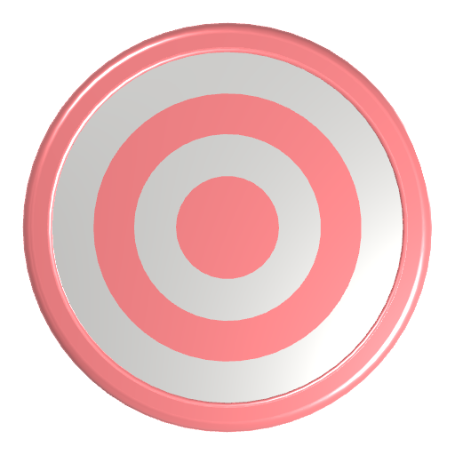
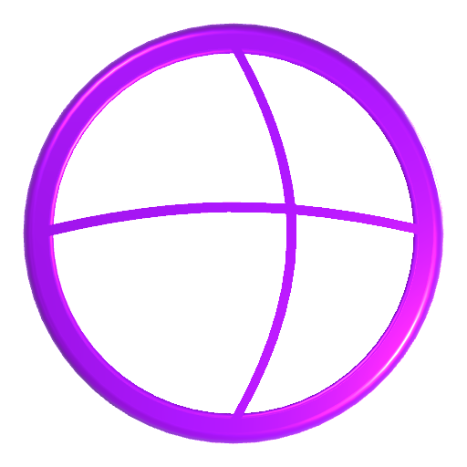
From quiet courage to life's funny little moments, every medal has its own character. Explore the actual designs from the app, with brighter colors and clearer details.
Starting is often the hardest part. You did it.
You faced something tough and got through it.
You paused and paid attention to the present moment.
You gave your body the rest it needed.
You chose repair over pride.
You reached out and made a real connection today.
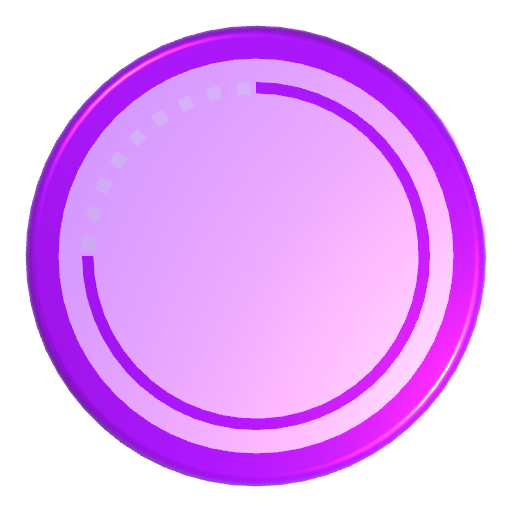
Asking for help is its own kind of strength.
You saw it through to the end.
You stopped to notice something good. That's a skill.
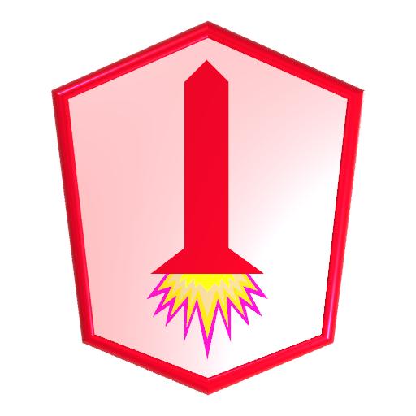
You chose growth over safety. That takes courage.
You got your body moving — every bit counts.
You made something that didn't exist before. That matters.
You gave your time or energy to support someone else.
You took care of your body with good food.
You didn't wait to be noticed. You made the first move.
You fed your curiosity today.
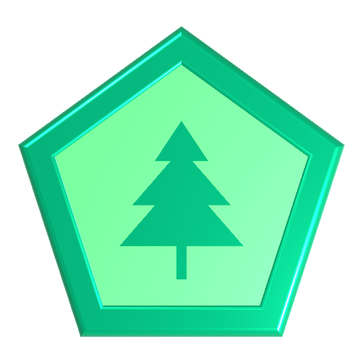
You stepped outside and let the world slow you down.
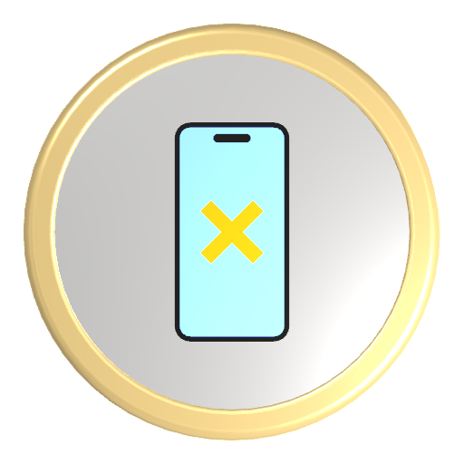
You gave your mind a break from the noise.
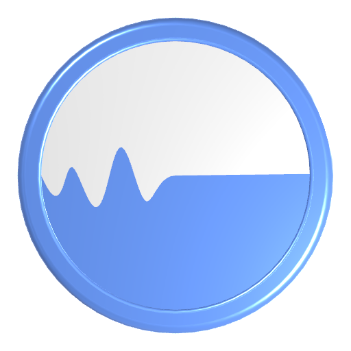
You didn't try to fix it or force an answer. You just held it.
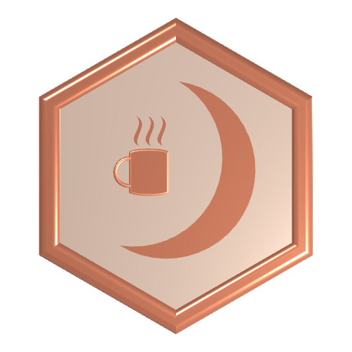
Rest isn't laziness. You chose to recover on purpose.
You pushed through even when it was hard.
No is a complete sentence. You used it.
You honoured what matters to you.
You showed up, and that matters.
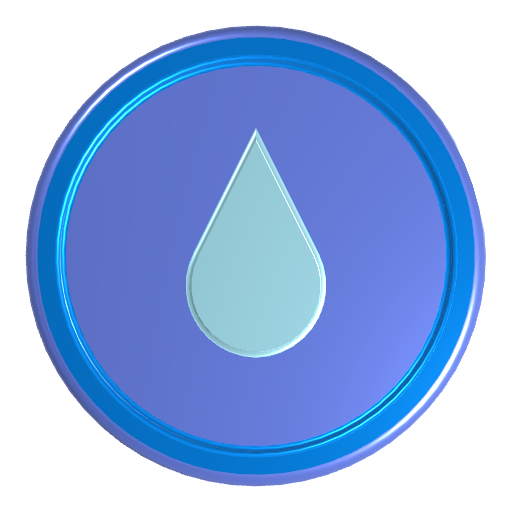
Letting yourself feel it is braver than holding it in.
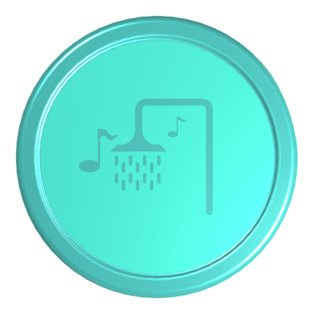
A full concert. Zero shame. Standing ovation from no one.
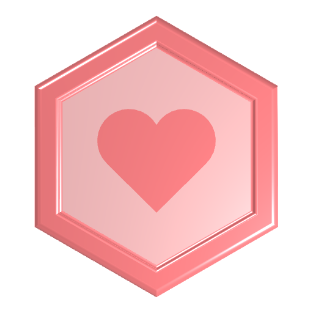
You gave yourself the grace you'd give a friend.
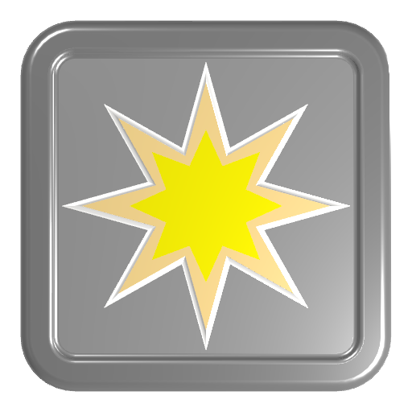
You heated something for way too long. A legend.
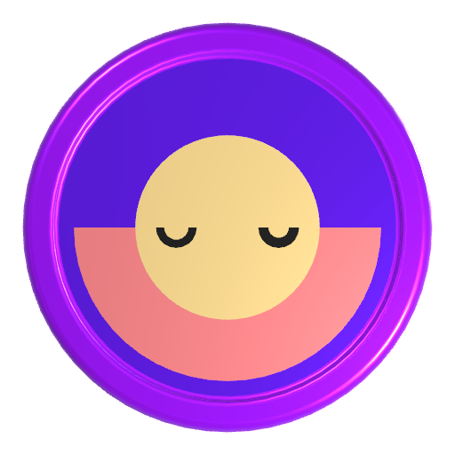
You lay down for 'just five minutes' and woke up a new person.
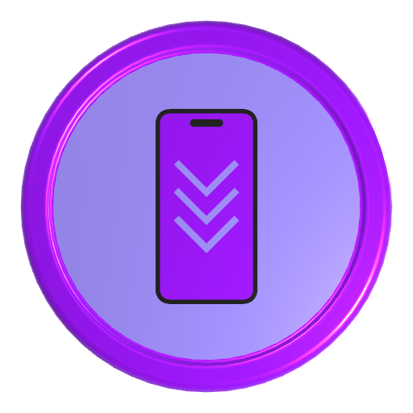
Two hours. You don't want to talk about it.
The dryer claims another victim. Moment of silence.
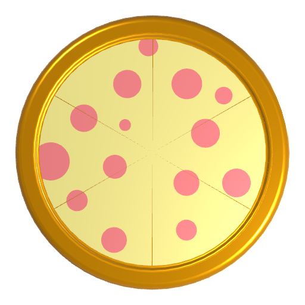
Cold pizza for breakfast. Nutritionally questionable. Spiritually correct.
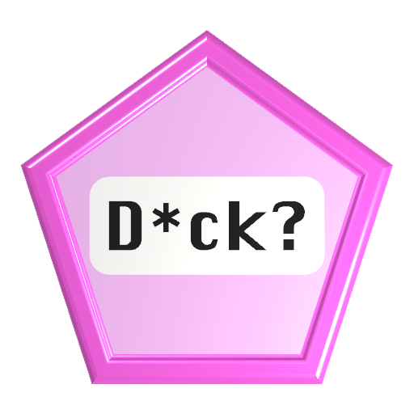
You sent that. You cannot unsend that. You have been changed by this.
It made absolutely no sense. You told someone about it anyway. They nodded politely.
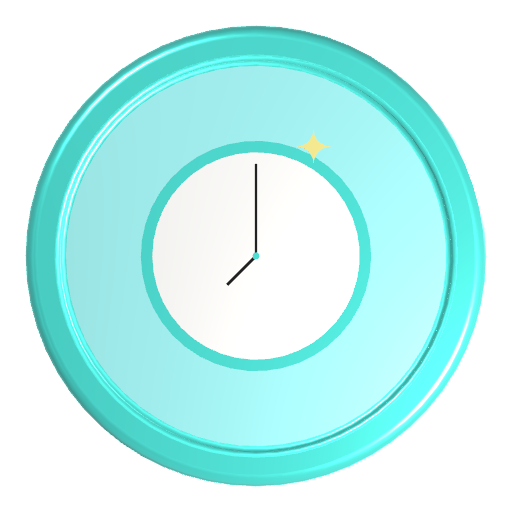
No phone. No clock. Just instinct, confidence, and being inexplicably right. Eerie.
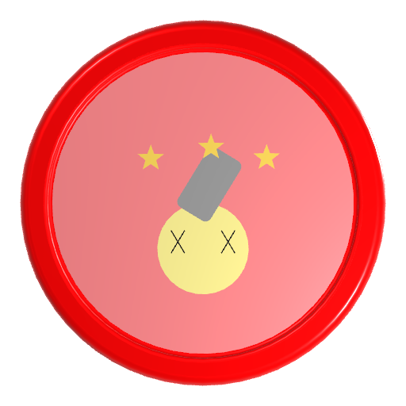
Lying down. Scrolling. Then: impact. You saw it coming and did nothing. A classic.
Moody was built with a simple principle: your most private thoughts should never leave your device.
100% on-device processing. All AI analysis in Moody is performed locally on your iPhone using Apple Intelligence. Your journal text is not sent to an AI server for analysis.
Achievement detection runs on Apple's on-device Apple Intelligence models. Mood charts use the moods you log. Your writing is not sent to an external AI service.
Moody requires no account to use. There is no sign-in, no profile, no analytics tracking your behavior. What you write is stored only in your device's local storage and optionally backed up to your personal iCloud account.
If you have iCloud Backup enabled, iOS may include Moody's local data in your personal device backup. This is governed entirely by you through iOS Settings. Moody itself never writes to any external storage independently.
Moody has no advertising SDK, no analytics framework, and no third-party data sharing of any kind. The app generates no revenue from your data.
Moody is being built for iPhone with iOS 27 or later. AI achievement detection requires a compatible device with Apple Intelligence enabled and its models ready. You can still save your entries when analysis is unavailable, and retry later.
Explore the app on GitHub ↗